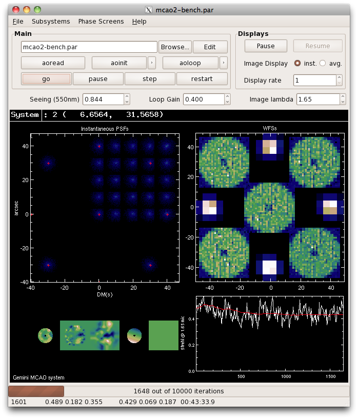

Introduction
These pages present information about
yao, a Monte-Carlo simulation tool for Adaptive optics (AO) systems.
Yao is open source released under the GPLv3. You are welcome
to use it, expand it and even distribute it, but please link back
to this page, as I am releasing updates semi-regularly. The last
version of yao to date (June 2010) is 4.5.2.
Main features

Yao is a Monte-Carlo AO simulation tool. It uses a number of custom developed functions to simulate wavefront sensors (WFS), deformable mirrors (DM) and many other aspects of an AO loop.
Highlights
- Coded in yorick, a open source scripting language similar to IDL or mathlab (powerful and free!). The core, CPU intensive routines are coded in C. Yorick and the YAO plugins are written in ANSI-C, which makes them portable on many platforms. YAO should run on any *nix platform, including Linux, Mac OsX, BSD, cygwin, etc... It may also work on windows, but I have never tried.
-
Shack-Hartmann,
Curvature and
Modal (Zernike)
WFS,
ON or OFF axis, are supported. It is also possible to add your own WFS NEW.
-
Stackarray (piezostack),
curvature (bimorph),
segmented NEW, (experimental),
modal (zernike or KL) and
Tip-Tilt deformable mirrors
are supported. The altitude of conjugation is adjustable. It is also possible to add your own DM NEW.
- An arbitrary number of WFSs and DMs can be used, with the possibility of mixing types. It is therefore possible to simulate single DM systems, as well as single non-zero conjugate, GLAO and MCAO systems.
- It supports Natural and Laser Guide Stars (or a mix).
- It supports photon and read-out noise.
- It uses a multi-layered atmospheric model, with geometrical propagation only.
- The loop execution has been optimized for speed: the critical routines have been coded in C. Yorick is thus used as a convenient "glue" between lower levels optimized C calls. Overall, this is rather efficient: A simple 6x6 Shack-Hartmann system (geometrical model, no diffraction) runs at over a 1000 iterations/seconds on modern machines (about 250it/sec for a full diffractive SHWFS). That's including turbulent phase computation, wavefront sensing, reconstruction, calculation of the DM shape and PSF/performance estimation.
A 50x50 Shack-Hartmann (full diffraction model) system runs at about 10 iterations/s for an 8-m telescope. A 188 curvature system runs at over 40 iterations/s (see the this entry for more details). Medium-size AO systems for ELTs can also be simulated, but it takes more time and RAM (a 60x60 SH on a 960 pixel pupil runs at about 1 iteration/s and takes up to 2GB of RAM at peak usage).
- Straightforward scriptability to probe parameter space.
- An (optional) GTK GUI provides a convenient interface. One can, e.g., change some of the system parameters while the loop is running. This provides an educational approach to Adaptive Optics (newbies can play with the parameters and immediately sees how the system reacts) and can also provides a quick way to investigate the stability conditions for a newly designed system, before entering more serious Monte-carlo simulations. Note that because the GUI is GTK-based, it requires the gnome libraries. These come automatically in Linux and BSD, but are a bit more challenging to install on OsX (but possible with macport or fink). Note that the GUI is not essential to run YAO.
Other capabilities
- Arbitrary aperture shape (defined through a user plugin). Disk with central obstruction is the stock pupil, but examples are provided to create segmented or GMT like pupils.
- Partitioning of DMs and WFSs in independent subsystems (e.g. for separate control of TT in LGS systems)
- 2 methods for Shack-Hartmann:
- Simple gradient average, no noise, very fast: This allow to do tests of the noiseless performance of a system, for quick performance evaluation of system dimensioning
- Full propagation, with subaperture image formation. Includes adjustable subaperture and pixel size, photon and read-out noise, bias and flat field errors, thresholding, convolution by a gaussian kernel and image elongation in the case of LGS. Proper overlap between subapertures and possibility to put a field stop with adjustable shape, size and position NEW .
- Separately adjustable integration time for each sensor
- Adjustable frame delay (in integer unit of the quantum loop time)
- Anisoplanatism modes for MCAO
- Leaky integrator control law, up to 10th order NEW
- DM Hysteresis
- DM saturation
- Separate loop gain per DM
- Adjustable DM sensitivity (micron/volt) to hook to real systems
- Adjustable subaperture and actuator validation thresholds
- Various reconstructors: least-square with truncation (SVD)
and MMSE-like. MMSE can use either full matrix or sparse methods
(fast). Users can hook into yao and use their own code to compute
the reconstructor NEW
- Adjustable multi-wavelength, multi-position performance estimate
- "Skip and reset" along the phase screens at adjustable interval, to reach statistically significant performance estimates faster
- Uplink tip-tilt correction for LGS
- Adjustable LGS Elongation
- Rayleigh Fratricide effect for multiple sodium beacon systems
- Extrapolated actuators
- Centroid Gain optimization, using LGS dithering (only for LGS + Shack-Hartmann)
- Parametrizable vibration spectrum: white, 1/f, peaks with adjustable rms and width NEW
- Lots of internal variables are accessible from the outside of the program for debugging/implementation of new features
Comments and shorcomings
- Dependency on FFTW for the
fast FFT C implementation.
- Dependencies on the following yorick packages: yutils
(general utilities), imutil (image manipulation), soy (sparse operations with yorick)
- The set-up routines (aoinit) have not yet been optimized for speed, thus, in particular, inverting large matrices can take some time. This optimization may come in due time, if deemed necessary.
-
There is no GUI to configure the systems. The parfile has to be edited manually, which in my view is not a big deal and actually allows for more compact & clever parfiles, as yorick loops can be used to set repetitive variables.
- Some work has been done with pyramid WFS but no has not been maintained and does not work in the current version
- Scintillation is not supported, as it has been shown by many studies to be negligible at NIR wavelengths.
- Command matrices are up to now computed as least-square estimates. Implementation of minimum-variance or MAP should come shortly.
Where to start?
Browse this site. Have a look at the
manual. If you like what you see, go to the
Installation page and follow the instructions.
Once the package is installed, follow the manual instruction, and use the examples parameter files to create your own parfile to model your system.


{kind=link}